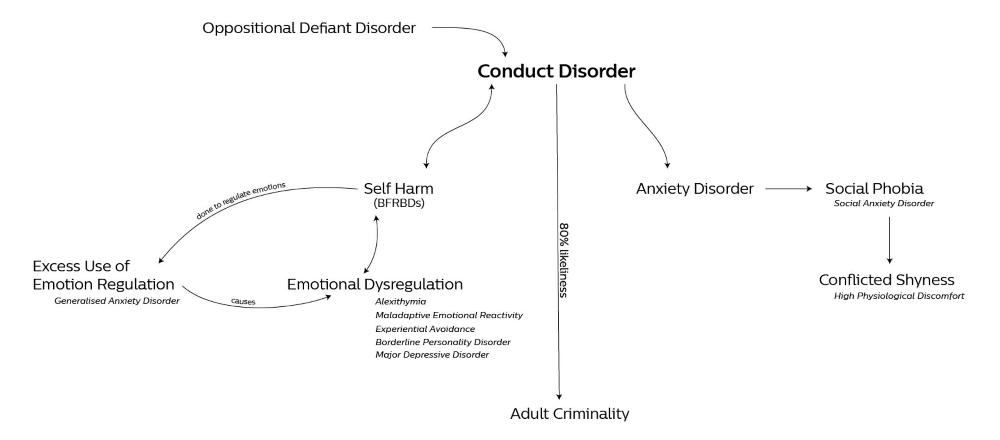

Emotion Sensing in Healthcare
UX Design Internship
Worked on a concept project to detect early signs of Conduct Disorder in children through emotion sensing technologies and IoT.
This project was completed in partial fulfilment of credits for the Integrated Masters Program in Interaction Design at IDC School of Design, IIT Bombay. The internship was at Philips Innovation Campus, Bangalore. The duration of the project was from May 2018 to July 2018.
WhyEmotions are episodes of interrelated, synchronised changes in the state of the body to stimuli inducing events relevant to the individual. In some children, these stimuli inducing events occur often, with the child responding with irrational outbursts of anger or emotions with negative valence. This is one of the symptoms of Conduct Disorder. Detecting the symptoms early and enrolling in therapy are effectives methods of dealing with the condition and helping the child the family.
WhatA solution to help connect the child to their parents and psychologists through Internet Communication Technologies was thought of. The goal was to provide the psychologist with as much data as possible from across the day in the child’s life, when outside therapy. While therapy was in session, games used during Cognitive Behavioural Therapy would help replicate real life situations on the parent app and the psychologist would be able to gauge the physiological reactions on the web app to aid in the therapy.
HowThrough IoT and biosensors, we designed a concept that can detect the changes in physiology of the child that might indicate heightened emotional responses. This data is streamed to the psychologist’s web app to help them correlate the class/events that might have been occurring at the time of the outburst to help the child work through their emotions during therapy. A separate parent app would enable remote therapy, with camera based affective computing along with biosensor data, streamed to the psychologist to help replicate real life events through situational games.
Sensing Emotions“Emotions are episodes of interrelated, synchronised changes in the state of the body to internal or external stimuli inducing events relevant to the major concerns of the individual.” They produce physiological, behavioural and cognitive changes in the way we respond to our environment. Humans have an innate ability to pick up on subtle cues to gauge what a person is feeling. We also understand that emotions are not discrete. But this makes it hard to train machines to understand and pick up affective cues. Robert Plutchik developed a system to classify emotions into discrete, universally recognised expressions, called the Wheel of Emotions, as seen below. Each of these discrete expressions have a physiological response that can be correlated with the emotion and individual is feeling at a given point in time. I have mapped these physiological responses to their respective emotion below.With this forming the base for our approach to determining the emotion, we explored potential biosensors such as muscle sensors, pulse sensors, galvanic skin temperature sensors, force sensors and affective facial recognition sensor such as Affectiva. The ProblemPossible areas where emotion sensing can intervene were explored. The ideas could be categorised into the following areas:We decided to focus on Mother & Childcare, specifically looking at tackling Conduct Disorder. Conduct Disorder

After a few conversations with doctors and parents alike, the symptoms of conduct were listed:
Children bully, they show traits of aggressive, dominating and impulsive behaviour
They lack attention and feel neglect from parents
They're copying others
They lack skills
They want independence
They can’t control their emotions
They want power and control
They might have underlying mental health issues
Bullying can have a wide spectrum of effects on a student including anger, depression, stress and suicide
These reasons compelled us to go with conduct disorder as an area of intervention for emotion sensing technologies to be used. The problem statement was defined as “How can we aid psychologists in understanding emotions of their patients with Conduct Disorder through emotion sensing technologies and IoT? Journey MappingA journey map of all the activities, touchpoints, emotional valence, pain points and goals were mapped out.
Final ConceptThe final concept is a three part solution that involves the child, their parents, and the psychologist. Physiological changes of the child are measured through a collar with a heart rate monitor and temperature sensor. We chose to put the sensors in the collar as it is the most discrete place which is privy to a lot of physiological data. This transmits data to a psychologist’s web application. During therapy, an app on the parent’s phone/tablet will replicate triggers the child faced in real life, to gauge the emotional response.Given that children with Conduct Disorder have tendencies to destroy objects, the game on the parent app tests their patience, self control and teaches them compassion and empathy. These are commonly used as a part of Cognitive Behavioural Therapy. If the child displays traits of self control during the game, they are rewarded, as dictated by Reward Therapy. If the child gets distracted, they lose points. The emotions in the game are determined by a facial affective camera, using the Affectiva API. The game we designed was called Beat the Clock. The goal is build a specific pattern using the blocks available and not to destroy the animals walking across the screen. If the child destroys the animals instead of building the block pattern, a coin is lost. A timer is put on the animals, so the child know how long they have to wait to be rewarded if they choose to not squish it. Below is a basic wireframe of the application.The psychologist’s web application is an analytics tool. It displays information about the child’s emotions during the week corresponding to the time of day. This lets the psychologist know when and potentially what the triggers for the child might have been. The psychologist can also access a video stream of the child playing the game during therapy, potentially taking the therapy to a remote setting if necessary. Based on this information, the psychologist can guide the child and the parent through the therapy sessions and across life.ConclusionEmotion sensing is an area that is new to me and a lot of time went in understanding how emotions, physiology and sensor data can be correlated. While the use case we chose is a real problem to many, I personally felt a bit disconnected to the problem given the myriad of other use cases that have greater potential for social good such as helping autistic children or with senior citizen care, or even patient monitoring during times of distress.